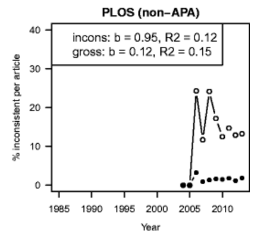
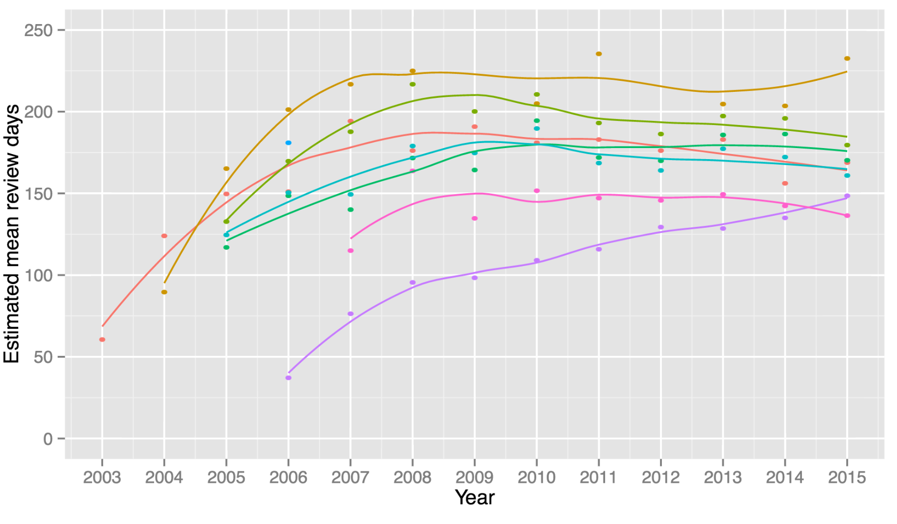
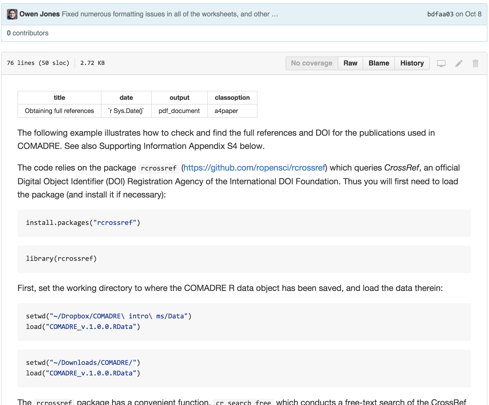

Thinking programmatically
Scott Chamberlain (@recology_/@ropensci)
UC Berkeley / rOpenSci
ORCID: 0000-0003-1444-9135
recology.info/talks/cr-talk
LICENSE: CC-BY 4.0
Let's talk about
INFRASTRUCTURE
&
SCIENCE
Infrastructure!!!

Infrastructure -
necessary building blocks for awesome science
- Stories
- What infrastructure enables
- Things that could be better
Stories/Use Cases
Use cases: Author inflation (rplos)

From: Benjamin Moore's blog
Use cases: Open science papers (rentrez)
papers published about open science
From: The Tao of open science for ecology, DOI:10.1890/ES14-00402.1
Use cases: Statistical reporting errors (rplos)
From: The prevalence of statistical reporting errors in psychology (1985–2013), DOI:10.3758/s13428-015-0664-2
Via EBSCOhost we manually downloaded all articles in HTML from six ... journals ... Furthermore, we manually downloaded all articles ... from two journals in general psychology... Finally, we automatically downloaded all HTML articles with the subject “psychology” from the Public Library of Science (PLoS; 2000–2013), using the rplos R package.
Use cases: Do metadata predict publication lag (rplos)
From: Publication cycle: A study of the Public Library of Science (PLOS) https://www.authorea.com/users/2013/articles/36067
Use cases: find DOI and proper citation from text bits (rcrossref)
From: jonesor/compadreDB
Infrastructure:
the enabler
Huge amount of open data!

But...we aren't trained to use it
And few programmatic tools
What's needed?

specifically: programmatic tools
All science should be done programatically
API: Application Programming Interface
Reproducibly plug data from the web into research workflows

rOpenSci Community
ad-hoc conversation over Twitter in 2010 Now a worldwide community of developers/researchers
http://ropensci.org/community
R has a lot of packages
(mostly data manip./viz & statistics)
Currently: ~7500

Data acquisition
data manipulation/analysis/viz
writing
publish
Data acquisition
data manipulation/analysis/viz
writing
publish
Data acquisition
data manipulation/analysis/viz
writing
publish
Data acquisition
data manipulation/analysis/viz
writing
publish
Data acquisition
data manipulation/analysis/viz
writing
publish
rOpenSci packages
ropensci.org/packages
Biology |
Literature |
Publishing |
rOpenSci packages
ropensci.org/packages
History |
Archeology |
Altmetrics |
Text mining
Metadata
Publishing

EML
EML provides a common data structure, to enable scientists to document, share, and interpret ecological data
Read more about EML
Write APIs?
remember the coolness of DET push model?
Lessons / Observations
Crossref TDM:
Very few links available
5563/5772 (< 4%)
provide full text links
Crossref TDM:
few links
after removing zeros...

Crossref TDM: fragile
Manually generated links fragile software
Crossref TDM:
Some don't resolve
| Publisher | % That Resolve |
|---|---|
| 311 | 0 |
| 78 | 100 |
| 316 | 100 |
| 301 | 100 |
| 286 | 100 |
| 276 | 80 |
| 179 | 100 |
| 263 | 100 |
| 4374 | 100 |
| 4443 | 100 |
Link rot / Broken links
This
Not This
Creates huge barrier to: Reproducibility
Documentation, documentation, documentation
Make developers a first class citizen on your landing page

Support client libraries to work with your web services
Auth should be easy
API keys / OAuth is plenty
Institutional access
This is still very painful
Outside of Crossref's API
it's kind of a mess
- how do I know if my institution has access?
- who do I talk to to get access?
- if my institution doesn't know to do, what then?
- great that licenses are provided in TDM, but what do they mean?
use proper HTTP status codes

We've got to make auth easier
no idea how to do it
Use open file formats
Use open file formats
Hard problem
easy to share - hard to reuse
Though...
A 3rd party - convert to easily machine consumable format?
Do people even know programmatic tools exist?
we need to educate
Infrastructure
programmatic tools
... fix some things ...
reproducible science
The end
{
"talk": "http://recology.info/talks/cr-talk/
"made-with": {
"name": "reveal.js",
"url": "https://github.com/hakimel/reveal.js",
"version": "v3.2.0"
},
"styling": {
"name": "bootstrap",
"url": "http://getbootstrap.com/",
"version": "v3.3.5"
},
"icons": {
"name": "font awesome",
"url": "http://fortawesome.github.io/Font-Awesome/",
"version": "v4.4.0"
}
}